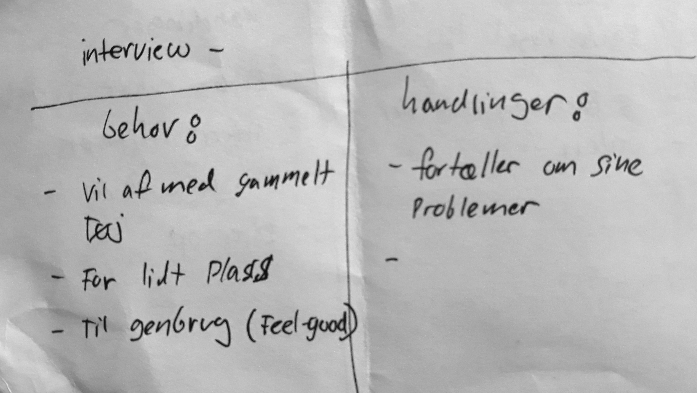

Brugerinterviews
Interview, øvelses-case
Her ser vi et interview med manden, som snakker om sit klædeskab.
Egne noter:
Flere punkter
Behov:
- Mere plads (tøj fylder, er for gammet, m.m.)
- Får måske brug for tøjet til flere børn?
- Tøjet skal ikke gå til spilde (feelgood/fornuft)
Handlinger & følselser:
- Køber ikke meget tøj (sparsomlighed)
- Overtvejer at give videre til genbrug eller venner (hjælpsomhed/omtanke)
- Overtvejer at sælge det på nettet (økonomi)
- Har problemer med at finde tøjet, når man har travlt
- Barn kommer snavset tøj i skabet?
Interviewguide
Til at forberede et interview kan man bruge Design Thinkings Empathize-trin, og derved forsøge at afdække brugerens behov, mål, ønsker, frustrationer, m.m. Det er godt at bruge åbne spørgsmål, og følge op interessante svar.
Spørgsmål:
- Hvornår og hvordan bruger du dit klædeskab?
- Hvordan har du indrettet dit klædeskab?
- Har du sorteret dit tøj på en bestemt måde? - Fungerer det?
- Er du generelt tilfreds med dit klædeskab, eller er det ting som kunne forbedres?
- Er der plads til alt dit tøj?
- Hvad gør du med tøj, som du ikke bruger? - Hvad med genbrug?
- Hvordan ville dit ulimative klædeskab se ud?